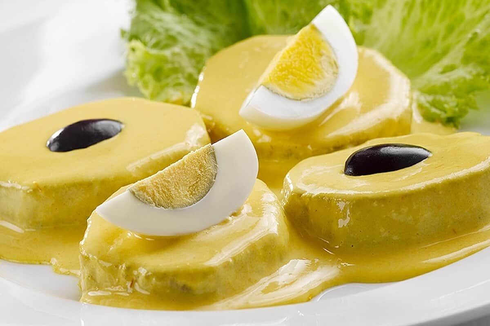

"huancaina Recipe"

Description
This is a very common sauce served as a cold dish, usually given as the first
A delicious yellow cream that is served with potatoes, eggs, lettuce and black olives
Ingredients
This is for 1 serving
- Salt (One half of tea spoon)
- Extra virgin Olive oil (7 spoons)
- Fresh cheese 200gr
- Penuts like 50gr
- Onion (any Onion) 1/2
- 3 Peruvian Yellow chilies
- Soda Crackers 50 gr (half a package)
- Evaporated Milk 1/2 of a cup (I use cream milk)
Steps to make it
- Cut the onions in big pieces (or small)
- Clean the inside of the yellow chilies and then cut them the size of the cut onions
- fry the pieces of onions and yellow chilies together
- Once the onion is clear and the chillies are seared, put them in the blender
- Put in the blender the fresh cheese, the salt, the milk, the crackers and blend all the ingredients together
- served them with potatoes, a lettuce, half a hard boiled egg and as many black olives as you like
- Voila (there you have it...enjoy)